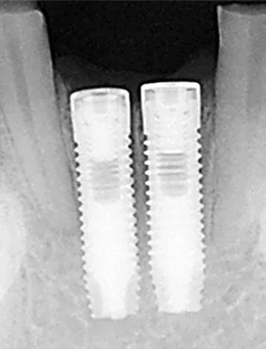
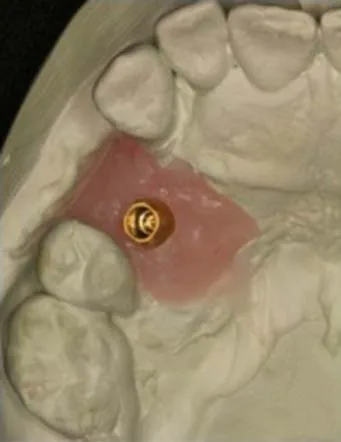

نسخه استخراجشده؛ ترجمه یا تأیید علمی انجام نشده است. وضعیت: captured
عمق کاشت ایمپلنت در استخوان، عامل مهمی در ارتباط با طول عمر ایمپلنتهاست. و برخلاف دو محور دیگر، اینجا با یک بازه سروکار داری که هر دو سرش مشکلساز است.
عمق ایدهآل پلتفرم: ۳ میلیمتر زیر حاشیهی آزاد لثهی دندانهای مجاور — با بازهی پذیرفتنی ۲ تا ۴ میلیمتر.
خیلی کمعمق. پلتفرم ایمپلنت با فاصلهی کمتر از ۲ میلیمتر از حاشیهی آزاد لثهی تاج، بیش از حد کمعمق است. سه پیامدش:
۱. کاهش گیر — ارتفاع کافی برای گیر پروتز باقی نمیماند. ۲. پروفایل خروج ضعیف — فضای لازم برای انتقال تدریجی از قطر ایمپلنت به قطر تاج وجود ندارد. ۳. شکست قطعات — گیر کم، به سمانی که نمیماند و شکست قطعات میانجامد. در ناحیهی قدامی، رنگ تیرهی اباتمنت هم از زیر لثه پیدا میشود.
گزینهها و درمان. بسته به زمان کشف خطا فرق میکند. در برنامهریزی: اگر عمق درست فضای پروتز را تأمین نمیکند، پروتز پیچشونده یا تغییر طرح به پروتز پارسیل ثابت.
حین جراحی: ایمپلنتی را که کمعمق نشسته درآور، استئوتومی را (با در نظر گرفتن ساختارهای حیاتی) عمیقتر کن و دوباره بکار. پس از اینتگریشن: درمان ایدهآل خارج کردن ایمپلنت و جایگزینی با ایمپلنت عمیقتر است؛ فقط اگر عارضهی خارج کردن زیاد باشد، پروتز پیچشونده با کانتیلور کوتاهتر و میز اکلوزال باریکتر جایگزین آن میشود.
به همین نکته دقت کن: خارج کردن ایمپلنتی که کاملاً اینتگره شده، به این دلیل که چند میلیمتر کمعمق کاشته شده. این هزینهی واقعی خطای محور Z است.

در سمت دیگر بازه، عمق بیشازحد هم پیامد دارد — و شاخصترین پیامدش در بافت نرم است.
عدد کلیدی: وقتی ایمپلنت بیش از ۴ میلیمتر زیر موقعیت فاسیال CEJ دندان مجاور کاشته شود، احتمال جمع شدن (شرینکیج) لثه بیشتر میشود.
به مرجع این عدد دقت کن: اینجا مرجع CEJ دندان مجاور است، نه حاشیهی آزاد لثه. یعنی محور Z با دو نشانهی مرجع سنجیده میشود: حاشیهی آزاد لثهی دندانهای مجاور برای بازهی ایدهآل و حد کمعمقی (کار با آن آسانتر است)، و CEJ فاسیال مجاور برای حد عمق بیشازحد.
در دندان سالم، حاشیهی آزاد لثه حدود ۱ میلیمتر بالای CEJ است؛ پس با تحلیل لثه، این دو نشانه از هم فاصله میگیرند. عمق بیشازحد هم فقط بافت نرم را درگیر نمیکند: فضای ارتفاع تاج نامطلوب، نیروهای گشتاوری بیشتر، سولکوس عمیق و بهداشت دشوار هم به دنبال دارد.
و یک نکتهی پروتزی که عمق را تعیین میکند: برای یک پروتز سمانشونده، بهطور ایدهآل ۸ میلیمتر فضا لازم است (۲ میلیمتر مادهی اکلوزال، دستکم ۴ میلیمتر ارتفاع اباتمنت برای گیر، و ۲ میلیمتر بالای استخوان برای عرض بیولوژیک). یعنی پیش از تصمیم دربارهی عمق، باید بدانی پروتز نهایی سمانی است یا پیچی — چون نیاز فضاییشان یکسان نیست.
و در پروتز متحرک: ضخامت آکریل هم یک قید است — کمتر از ۲ میلیمتر آکریل به گیر ضعیف دندانهای دنچر و احتمال شکستن بیس دنچر میانجامد. دستکم ۲ میلیمتر آکریل برای استحکام کافی لازم است.
جمعبندی این درس: عمق ایمپلنت یک عدد جراحی نیست — برآیند سه قید: بافت نرم، پروتز و استخوان است.

نوع سؤال: ساخت کلمه · 4 خانه
حروف منبع: ر · و · ج · خ